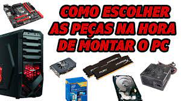
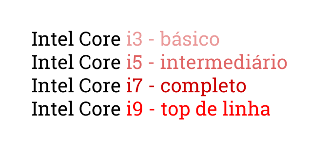

Nossos serviços
Aprenda a montar seu computador!
Comprar um computador pronto é inegavelmente prático: você chega na loja, pergunta sobre uma ou outra especificação, leva a máquina fechada pronta para ser ligada e utilizada. No entanto… é possível, dessa forma, ter certeza de absolutamente tudo sobre o PC? Na maioria das vezes, não.
Os fabricantes costumam evidenciar, é claro, os pontos altos do computador, como o processador, a memória RAM e a capacidade de armazenamento. Mas e quanto à placa mãe? E ao cooler?
Montando a própria máquina você tem certeza da qualidade de cada um dos componentes, bem como pode escolhê-los com base no que mais faz sentido para as suas necessidades e o uso que você fará do PC.
É uma tarefa que é, certamente, um pouco menos prática e que exige muita pesquisa, mas que vale muito a pena. Por isso vamos dar algumas dicas de por onde você deve começar, e explicar quais são as peças-chave que não podem faltar em um computador.
Por que montar o seu computador?
Comprar um computador pronto é inegavelmente prático: você chega na loja, pergunta sobre uma ou outra especificação, leva a máquina fechada pronta para ser ligada e utilizada. No entanto… é possível, dessa forma, ter certeza de absolutamente tudo sobre o PC? Na maioria das vezes, não.
Os fabricantes costumam evidenciar, é claro, os pontos altos do computador, como o processador, a memória RAM e a capacidade de armazenamento. Mas e quanto à placa mãe? E ao cooler?
Montando a própria máquina você tem certeza da qualidade de cada um dos componentes, bem como pode escolhê-los com base no que mais faz sentido para as suas necessidades e o uso que você fará do PC.
É uma tarefa que é, certamente, um pouco menos prática e que exige muita pesquisa, mas que vale muito a pena. Por isso vamos dar algumas dicas de por onde você deve começar, e explicar quais são as peças-chave que não podem faltar em um computador.
Pontos importantes:
- 1º Entenda bem as suas necessidades
- 2º Faça pesquisas
- 3º Estabeleça um orçamento
- 4º Defina sua plataforma e seu processador
- 5º Atente-se à placa mãe
- 6º Não se esqueça da memória RAM
- 7º Armazenamento é essencial
- 8º Escolha uma placa de vídeo
- 9º Agora falta pouco: fonte e refrigeração
- 10º Dica de ouro: busque fornecedores confiáveis
Conheça a melhor linha de processadores
A linha mais famosa da Intel é a que dá título a este artigo: Intel Core. Se você quer uma explicação curta para a diferença dos números, aí vai: o i3 é o mais básico, o i5 é intermediário, o i7 é mais completo e o i9 é o top de linha. Quanto maior o número, mais poderoso é o componente.
Você se engana, porém, se pensa que o assunto morre aqui. Nem todo mundo precisa pagar mais caro em um PC com Intel Core i9 só porque este é o melhor processador. Tudo depende do seu perfil e do que você pretende fazer com seu computador.
O segredo está nas entrelinhas: um i3 normalmente vem com dois ou quatro núcleos de processamento, enquanto os i5 e i7 vêm com até seis ou oito, e o i9 ultrapassa todos os limites com até 18 núcleos. Quanto mais núcleos, mais tarefas o processador pode executar ao mesmo tempo. A velocidade com que esse processamento é executado também faz diferença: um i3 mais moderno, de oitava geração, por exemplo, pode funcionar a 3,6 GHz. Já um i5 de oitava geração pode chegar a 4,3 GHz no modo “turbo”; um i7 pode fazer 4,7 GHz e um i9 pode alcançar até 4,8 GHz de frequência.
| Componentes Básicos | Marcas | Faixa de Preço |
|---|---|---|
| Placa-mãe | Intel, Asus, Gigabyte. | R$ 200,00 a R$ 3.000,0 |
| Unidade de processamentocentral (CPU) | Intel. | R$ 500,00 aR$ 4.000,00 |
| Memória (RAM) | Samsung, Kingston e a Corsair | R$ 100,00 a R$ 2.000,00 |
| Armazenamento(Hd ou SSD) | Kingston, San Disk, Seagate. | R$ 100,00 a R$1.900,00 |
| Gabinete | Corsair, Fortrek Cruiser, Cooler Master Cosmos. | R$ 189,00 aR$ 4.500,00 |
| Cooler “Ventoinha” | Intel, AMD, Noctua. | R$ 30,00 a R$150,00 |
| Fonte de alimentação | Masterwatt, Silverstone Sfx, Evga Atx. | R$ 65,00 a R$ 600,00 |